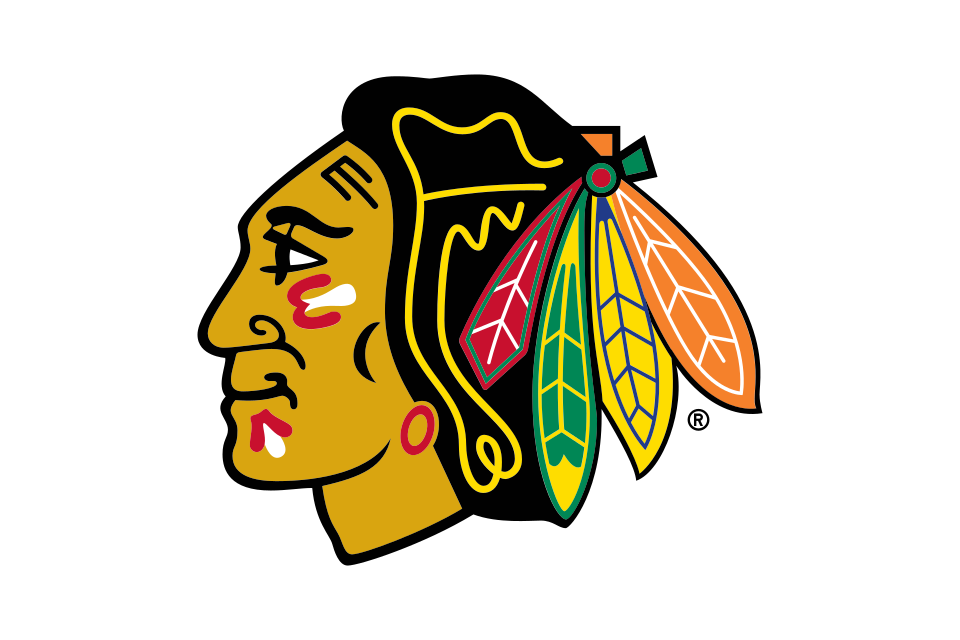

Steelers players express support for Mike McCarthy after winning first game since Aaron Rodgers divorce
The Steelers had some things to discuss after Aaron Rodgers unleashed a laundry list of grievances against the head coach.
Every league’s headlines, every team’s news.



 Rangers vs. Blackhawks
Rangers vs. Blackhawks


 Kings vs. Ducks
Kings vs. Ducks
 Kansas City Chiefs vs Buffalo Bills Thanksgiving Day
Kansas City Chiefs vs Buffalo Bills Thanksgiving Day

 Philadelphia Eagles vs. Dallas Cowboys Thanksgiving Day
Philadelphia Eagles vs. Dallas Cowboys Thanksgiving Day
 Spurs at Trail Blazers
Spurs at Trail Blazers
 Kings at Warriors
Kings at WarriorsThe Steelers had some things to discuss after Aaron Rodgers unleashed a laundry list of grievances against the head coach.

T.J. Watt, Cam Heyward, and Jalen Ramsey helped lead the Steelers out of a dark week

Injuries have not been kind to the Rams this season. In the team’s Thanksgiving Eve win over the Packers, Los Angeles lost tight ends Davis Allen and Tyler Higbee. Allen...

Dan Villari has playmaker potential, is he ready?

The tight end rallied the team with a fiery speech after one of his best friends was released for criticizing coach Mike McCarthy.

John Harbaugh could run for mayor of what his wife calls “Crazy Town.”

49ers quarterback Brock Purdy emerged from Sunday's win over the Vikings with an ankle injury.

We spoke with SB Nation’s Chargers blog about the upcoming Patriots opponent.

Call it the Injury Bowl if you will, but the Rangers will just call it another night of having “trouble putting the puck in the back of the net.”


Moore has two assists, Knight makes 30 saves for Chicago; New York drops third in row


The New York Rangers were at the United Center on Friday for a post-Thanksgiving match against the Chicago Blackhawks.

CHICAGO (AP) — Andrew Mangiapane scored two power-play goals in the first period, Spencer Knight made 30 saves and the Chicago Blackhawks held off the New York Rangers 2-1 on Friday night for their fourth straight victory.Mika Zibanejad connected on the power play for the Rangers, who lost their third straight despite…


Elijah Smith thought there was a chance he wasn’t going to be re-signed by Ultimate Fighting Championship (UFC), but just a few weeks after becoming the first fighter to knock out Davey Grant he has a new contract to call his own. There’s no debate that Smith is one of the best rising prospects in […]

Fight fans haven’t heard much from Stipe Miocic since his loss to Jon Jones back in November 2024, but that doesn’t mean the former UFC heavyweight champion isn’t open to a return to action. Miocic, who is widely considered one of the best heavyweight fighters of all time, didn’t leave the sport under the best […]
Song Yadong is willing to fight former champ Merab Dvalishvili if UFC opts to book Petr Yan vs. Sean O'Malley 2.

Former UFC bantamweight champion Cody Garbrandt made an announcement ahead of the upcoming UFC Cleveland event.UFC Cleveland takes place on February 13, 2027, at Rocket Arena, with a five-round middleweight main event between Bo Nickal and Joe Pyfer.Garbrandt, an Ohio native, wants to fight on the card — and it will…

Tyjani rose to the top of the kickboxing world – and now he looks to do the same in MMA.
Cody Garbrandt is saying goodbye to UFC. The former bantamweight champion plans to move on following the final fight of his UFC contract, which is expected to be satisfied on Sat., Feb. 13, 2026 at Rocket Arena in Cleveland, Ohio. That would put Garbrandt on the undercard of the “Fight Night” lineup topped by Joe […]
Cody Garbrandt says he will make his final walk to the UFC cage at February's event in Cleveland.
The UFC welterweight challenger isn't entirely bummed about an interim title fight.

Curry sustained the injury on Nov. 11 and has missed Golden State's past six games, during which the team has gone 2-4.

Ziaire Williams is no stranger to giving back to the community that raised him.

Okpara threw a punch at Dillingham after being shoved with no call from the officials. A melee then broke out among players from both G League teams.

Pennsylvania basketball fans have a Black Friday offer to consider: Bet $25 and choose double your stake in Bonus Bets or a 200% profit boost. Put NBA Cup action on your post-Thanksgiving plans and check the qualifying wager requirements before betting.

Can the Heels send the Mountaineers home to the place they belong with a loss?

Dillingham, the No. 8 pick in 2024, is trying to work his way back to the NBA

Golden State basketball is on the way! Come join our game thread and chat about tonight’s matchup here.

The best of the best in the West are meeting in the Alamo City tonight.

Roster Review: Randy Vásquez

Miller’s 2026 season was derailed by injuries, limiting him to three relief appearances with the Dodgers after spending most of the year sidelined.

Royce Lewis still can’t believe he’s a Dodger. The newest infielder in Los Angeles learned he was being traded from the Twins while he was in line at In-N-Out. But...

Arizona’s worst position player by Win Probability might surprise you.

The deal includes a $16 million player option for 2028 and if that option is declined, Toronto has a $40 million club option with a $1.5 million buyout.

The Reds outfield needs a quality right-handed bat. Can Dunn provide that after an injury in 2026?

Davis went No. 1 overall to the Pirates in the 2021 draft, but never adapted to the highest level offensively

It’s Black Friday so let’s talk about wheeling-and-dealing, shall we? The topic is very simple: What was your favorite Braves acquisition that you can think of? I’ll start with this: The trade in December 2015 that sent Shelby Miller to Arizona in exchange for Dansby Swanson, Ender Inciarte and Aaron Blair. Not only…

One of the longest droughts in Brazilian football is over.It had been a long 41-year wait.And Vila Nova Futebol Clube are back in the top flight of Brazilian football.Their last appearance was way bac...

Matchday 37 of the Brasileirão continued this Friday (27) with a clash between top-four sides at the Maracanã.A showdown that delivered EVERYTHING expected of it. Here's how the match unfolded, the ...

Middlesbrough boss Kim Hellberg spoke BBC Radio Tees following their 2-0 defeat at Southampton.

Late drama at the Oval saw Conor McMenamin rescue a 1-1 draw for Glentoran against Larne.

Ten-man Coleraine miss out on the opportunity to leapfrog Linfield at the top of the table as they go down 1-0 at home to Dungannon Swifts.
Eighteen years after making their Premier League debuts two minutes apart, Jack Wilshere and Aaron Ramsey meet as managers.

Another contract renewal at Fluminense.After confirming that Germán Cano will stay until June next year, the Tricolor announced news the fans had been eagerly awaiting.At 42, Thiago Silva has reached...

Southampton were thrown out of last season’s play-offs over the Spygate scandal